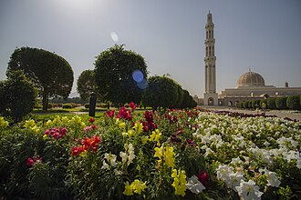

Prezentare
La grande mosquée du sultan Qaboos, située à l'ouest de Mascate, près de Bawshar, est la principale mosquée d'Oman. Financée et commandée par le sultan Qabous ibn Saïd, elle est commencée en 1994 et inaugurée le 4 mai 2001. Elle est particulièrement connue pour avoir le 2e plus grand tapis fait main d'une seule pièce et le plus grand chandelier du monde, serti d'or 24 carats.
جامع السلطان قابوس الأكبر؛ هو أكبر المساجد التي أمر قابوس بن سعيد سلطان عمان ببنائها. يقع الجامع في محافظة مسقط. وقد أمر ببنائه عام 1992م. قام بتصميمه المهندس المعماري محمد صالح مكية بالاشتراك مع شركة كواد ديزين ومركزهم لندن ومسقط. واستمر بناؤه 6 سنوات حتى اكتمل.
The Sultan Qaboos Grand Mosque is a Friday mosque located in Muscat, the capital city of the Sultanate of Oman. Completed in 2001 in a contemporary Islamic style, it is the largest mosque in the country and can accommodate 20,000 worshipers.
Sultan Kabus Ulu Camii Umman Sultanlığı'nın başkenti Maskat'ta bulunan ana camidir.
Masjid Agung Sultan Qaboos (جامع_السلطان_قابوس_الأكبر) adalah sebuah masjid yang berada di Muskat Oman. Masjid ini diresmikan oleh Sultan Qaboos pada tahun 2001 dan sempat mendapat rekor dunia sebagai masjid dengan karpet buatan tangan terbesar di dunia, kini menjadi rekor terbesar kedua dunia seiring diresmikannya Masjid Agung Sheikh Zayed di kota Abu Dhabi, Uni Emirat Arab tahun 2007
جامع سلطان قابوس اکبر عمان کی سب سے بڑی مسجد ہے جو دارالحکومت مسقط میں واقع ہے۔
Die Große Sultan-Qabus-Moschee ist die Hauptmoschee in Oman. Sie gilt als eines der wichtigsten Bauwerke des Landes und als eine der weltweit größten Moscheen.
La Gran Mezquita del Sultán Qabus es la mezquita más importante del Sultanato de Omán.
La Grande Moschea del Sultano Qabus è la moschea principale del Sultanato dell'Oman, situata nella capitale Mascate.
A Grande Mesquita do Sultão Qabus é a mesquita mais importante do Sultanato de Omã.
De Sultan Qaboes-moskee, ook wel Grote Sultan Qaboes-moskee, is de grootste moskee in Oman. De moskee is gebouwd op een terrein van 416.000 m² en het gehele complex bedekt circa 40.000 m². De moskee werd ingehuldigd door sultan Qaboes van Oman op 4 mei 2001.
Мечеть Султана Кабуса или Маскатская соборная мечеть — главная действующая мечеть Маската, Оман.
Pe hartă
Documente și legături
- Wikipédia — Français
- Wikipédia — العربية
- Wikipédia — English
- Wikipédia — Türkçe
- Wikipédia — Bahasa Indonesia
- Wikipédia — اردو
- Wikipédia — Deutsch
- Wikipédia — Español
- Wikipédia — Italiano
- Wikipédia — Português
- Wikipédia — Nederlands
- Wikipédia — 中文
- Wikipédia — Русский
- Wikidata — Q1548443
Date: Wikidata (CC0), actualizate la fiecare 3 luni. Anul este cea mai veche dată de construcție cunoscută a clădirii: pentru o clădire devenită moschee mai târziu (precum Sfânta Sofia), este cea a clădirii originale. Fotografii: Wikimedia Commons, autorul și licența pe pagina fiecărei fotografii.